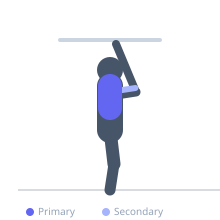

Exercise guide / Neutral-Grip Pull-Up
Neutral-Grip Pull-Up
The neutral-grip pull-up is performed with palms facing each other, which places the shoulder in a mechanically advantaged and more comfortable position than the pronated (overhand) grip. This variation is typically easier to perform than a standard pull-up and is recommended for those with wrist, elbow, or shoulder discomfort during overhand pulling, while still providing strong lat and biceps stimulus.
Primary muscles
latissimus dorsi
Secondary muscles
biceps brachii long head
brachialis
teres major
rhomboid major
Stabilizers
transverse abdominis
trapezius lower
Equipment
Pull-Up Bar (Freestanding Tower)
Optional
Gymnastic Rings


Starting position
- Grasp parallel handles or a neutral-grip attachment with palms facing each other and arms fully extended. Hang in a dead hang with the core lightly braced.
Setup
- Use a pull-up bar with neutral-grip handles, a rack-mounted neutral-grip attachment, or gymnastic rings set parallel. Adjust width to shoulder-width for optimal shoulder mechanics.
Steps
- Step 1: Begin from a full dead hang, lats on stretch, core braced.
- Step 2: Depress the shoulder blades and initiate the pull by driving the elbows down and back.
- Step 3: Pull the chest toward the handles until the chin clears or the chest approaches the handles.
- Step 4: Pause at the top, squeezing the lats.
- Step 5: Lower under control to the full dead hang position.
Coaching cues
- Depress and retract the shoulder blades before you bend the elbows
- Think 'elbows to ribs', not 'hands to shoulders'
- Finish the rep completely — full extension at the bottom every time
Breathing
- Exhale during the pull. Inhale on the controlled descent.
Range of motion
- Full dead hang at the bottom. At the top, the chin should clear the handles or the sternum should approach them.
Tempo
- 2-1-3-0 (2s concentric, 1s hold, 3s eccentric)
Common mistakes
- Shrugging the shoulders upward rather than depressing the scapulae at the start
- Partial reps that do not achieve full arm extension at the bottom
- Using kipping momentum rather than strict pulling
Safety
- Neutral grip is recommended for those with existing elbow or shoulder issues who struggle with the pronated pull-up
- Ensure handles or ring straps are rated for body weight
Training
- strength: 3–8 reps
- hypertrophy: 8–12 reps
- endurance: 12–20 reps
- strength: 4–6 sets
- hypertrophy: 3–5 sets
- endurance: 2–4 sets
- Rest: {'strength': 150, 'hypertrophy': 90, 'endurance': 45}